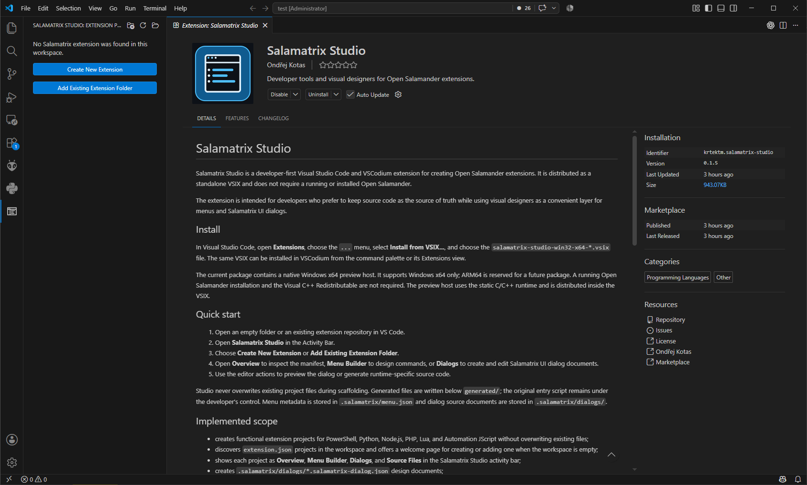
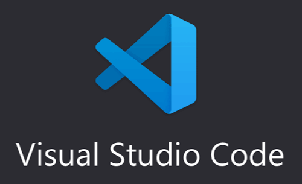
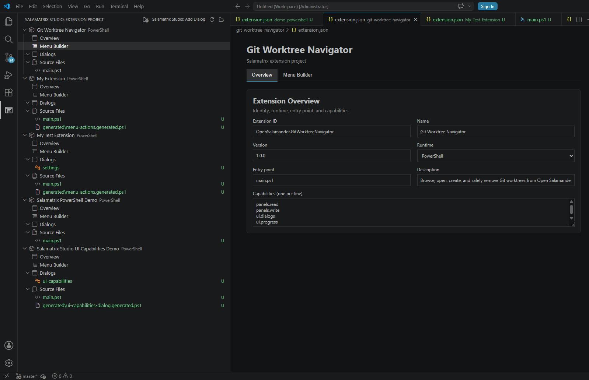
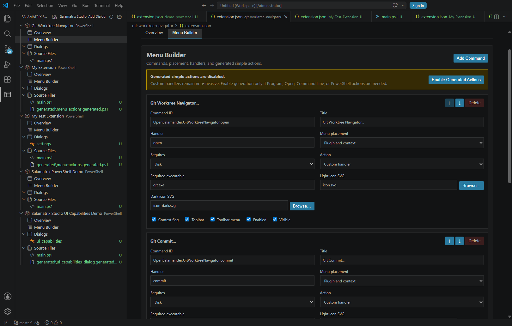
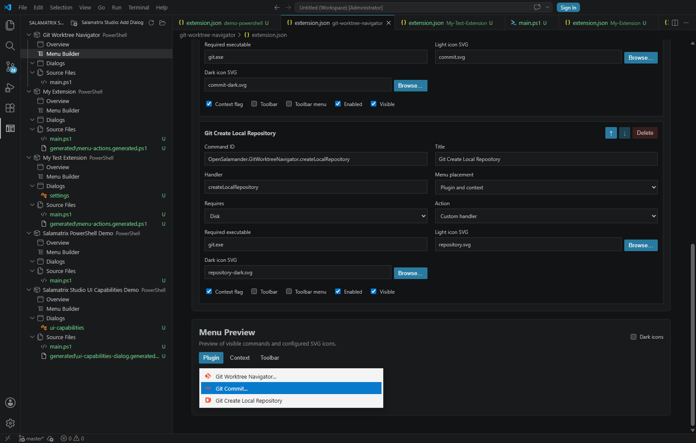
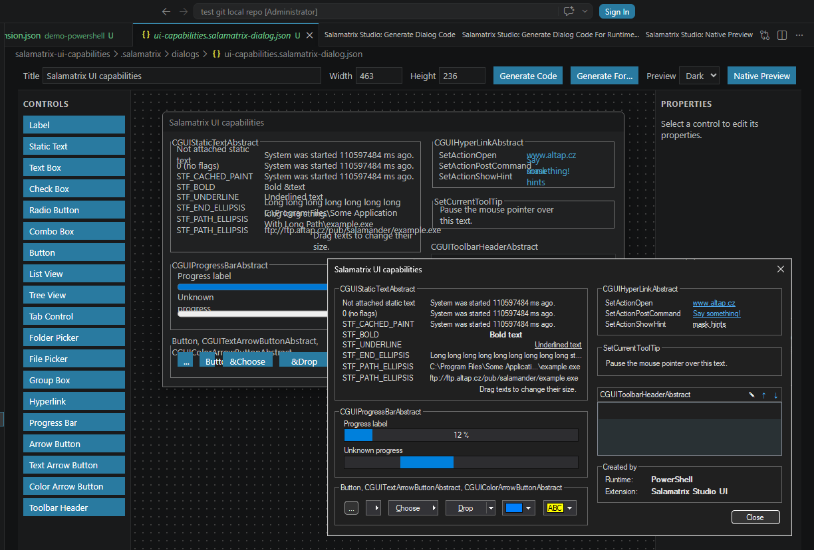

Extension and manifest designer
Create functional projects for PowerShell, Python, Node.js, PHP, Lua, and Automation JScript. Inspect and edit manifest fields without losing fields outside the visual surface.
Salamatrix Studio is a developer-first extension for Visual Studio Code and VSCodium. It brings extension scaffolding, menu design, Salamatrix.UI dialog design, native preview, and source generation into one focused workspace.
Keep your source files in control: Studio writes its design documents below .salamatrix/ and generated modules below generated/. Existing entry points stay untouched until you explicitly accept an integration preview.


Open an extension repository—or start with an empty workspace—and use the Salamatrix Studio view in the Activity Bar.
extension.json project.Create functional projects for PowerShell, Python, Node.js, PHP, Lua, and Automation JScript. Inspect and edit manifest fields without losing fields outside the visual surface.
Store menu metadata in .salamatrix/menu.json, choose plugin, context-menu, and toolbar placements, and preview light or dark SVG icons.
Build *.salamatrix-dialog.json documents with drag-and-drop controls, geometry, options, items, columns, validation, templates, and standalone dialog projects.
Generate readable PowerShell, Python, Node.js, PHP, Lua, Automation JScript, or native C++ dialog modules from the same design document.




The Visual Studio Marketplace is the primary place where you can find and install the Salamatrix Studio extension for Visual Studio Code.